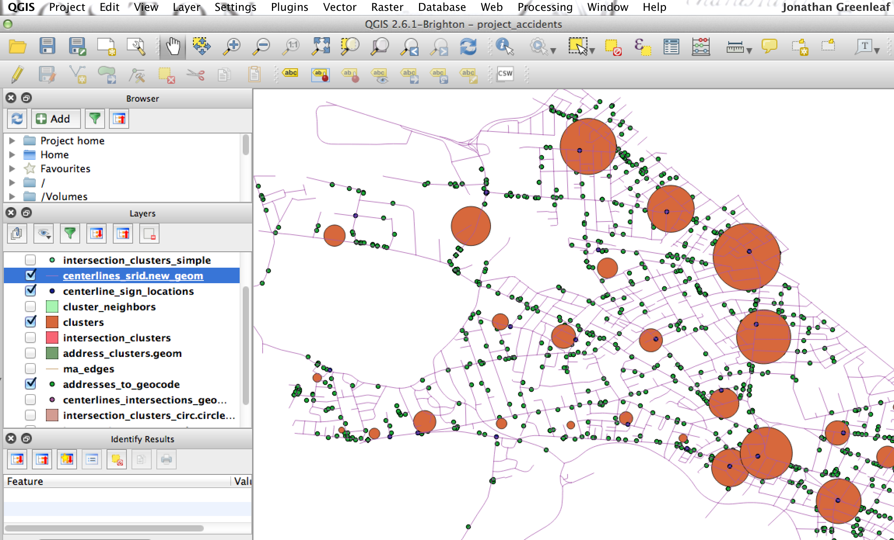

I have been biking in and around Cambridge for a decade. I live here. My kids go to school here.
I care deeply about bike safety. I pursued this challenge because I have come far too close to
becoming a statistic in this data set.
I think we have an opportunity to use this data to inform a public policy response.
I think an approach where creative signs are posted (at least temporarily)
around Cambridge could be effective in addressing this issue.
The question is: where to post signs?
My approach was to take the address/intersection location data, and use
PostgreSQL and
PostGIS,
combined with QGis, to visualize the problem. I installed the former on my AWS free tier,
and grabbed
TIGER shapefiles for MA, and the
GIS data sets from the City of Cambridge.
The PostGIS geocoding functions allowed me to visualize where accidents were happening.
I then used a kmeans clustering function to define 50 clusters across Cambridge.
Next, I looked at street centerlines 'near' the defined clusters, trying to find
important intersections. I used PostGIS buffer / overlap / intersection data
to identify these:

Lastly, I wanted a simple way to show the final product.
Leaflet.js was selected
for this purpose, cutting out a direct db call in favor of exported GeoJSON
/ lat lon data from Postgres.
Conclusion: I believe most of the 40 proposed locations for signage, as determined
by this repeatable (and tunable) approach - would work well. 10 small clusters
(those with under 30 accidents) were removed from consideration. And high traffic
streets are would obviously be valuable to cross-reference with this output.
Because this approach combines open data and statistics, this exercise is not only repeatable
in other communities, but also it can be refined over time.
I belive the message on these signs should be a mix of memorable, unique and cheeky.
The signs I created and posted in the U/I should reflect this. They would give me pause,
and raise my awareness, whether I was biking or driving in Cambridge.
Thank you for bringing attention to this issue.
jonathan greenleaf
Cambridge, MA
code is shared
here